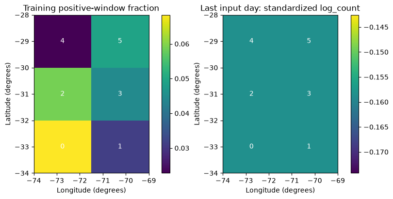
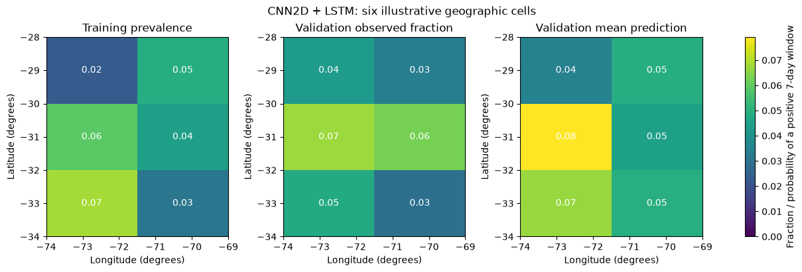
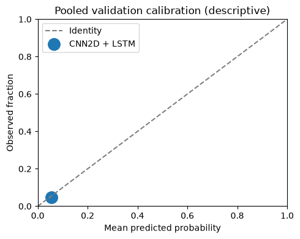

Spatial sequences: CNN2D + LSTM and ConvLSTM
From daily regional summaries to six cell probabilities
Build two small spatial-temporal networks on the same frozen catalogue. Copy each code block into a new Colab cell in order. The common preparation below downloads and verifies the course data, constructs the six-cell representation, and preserves the chronological split. This is an exploratory teaching extension; validation diagnostics are not verified seismic forecasting results.
Start with a blank Colab notebook
Open a new Colab notebook, select a Python CPU runtime, and copy each numbered Python block into its own code cell, in order. The Copy button copies code only. Keep this page alongside Colab for the explanations. You can instead download the matching notebook above and run its existing cells.
The first run downloads a frozen public data pack automatically. Its URL is pinned to a Git commit and its SHA-256 is checked. There is no manual ZIP upload and no live catalogue query. After an interrupted session, run the notebook again from the beginning. Outputs below labelled prepared local run come from an independent local CPU execution; they are not a claim about your Colab session.
Colab normally supplies the required libraries. If imports fail, install tensorflow==2.19.1 pandas scikit-learn matplotlib in a separate cell with %pip install, restart the runtime, and begin again. Exact local versions and timings are recorded with the prepared results. Installation changes the active Colab environment only.
Prepare the environment
We use small networks and three predeclared seeds. Seeds describe variability in optimization, not uncertainty from new earthquakes. The tutorials evaluate validation only: the existing course test period has already been inspected. Changing architecture now does not make that period an untouched test again.
Code block 1 · Copy into a new Colab code cell, then run.
import os
os.environ["CUDA_VISIBLE_DEVICES"] = "-1"
os.environ["TF_CPP_MIN_LOG_LEVEL"] = "2"
os.environ["TF_NUM_INTRAOP_THREADS"] = "2"
os.environ["TF_NUM_INTEROP_THREADS"] = "2"
from pathlib import Path
import datetime, hashlib, json, platform, time, uuid, zipfile
from urllib.request import urlopen
import numpy as np
import pandas as pd
import matplotlib.pyplot as plt
import sklearn
import tensorflow as tf
from tensorflow import keras
from IPython.display import display
try:
tf.config.threading.set_intra_op_parallelism_threads(2)
tf.config.threading.set_inter_op_parallelism_threads(2)
except RuntimeError:
print("Thread settings were already initialized; restart for the reference settings.")
SEEDS = [7, 17, 27]
EPOCHS, BATCH_SIZE = 20, 64
TUTORIAL = "maps"
RUN_DIR = Path("tutorial-runs") / (TUTORIAL + "-" + uuid.uuid4().hex[:12])
RUN_DIR.mkdir(parents=True, exist_ok=False)
started_at = time.perf_counter()
print("Python:", platform.python_version(), "TensorFlow:", tf.__version__, "Keras:", keras.__version__)
print("Validation only. Results will be saved to", RUN_DIR)Prepared local output — expand to compare
Python: 3.12.14 TensorFlow: 2.19.1 Keras: 3.15.1 Validation only. Results will be saved to tutorial-runs\maps-445f3b58f5db
Download and verify the frozen catalogue
The pack contains the regional USGS catalogue and its provenance. It includes records down to M 3 for diagnostics; these tutorials retain M ≥ 4.5 as inputs and M ≥ 5 as targets. Magnitudes are the preferred catalogue values, not a claim that all measurements use the same magnitude scale.
The catalogue was downloaded in October 2026 and contains revised records. Separating inputs and targets by event time cannot reconstruct which catalogue versions were available historically. These are retrospective teaching experiments, not operational forecasts or maps of shaking or risk.
Code block 2 · Copy into a new Colab code cell, then run.
PACK_URL = "https://raw.githubusercontent.com/FranPlaza/FranPlaza.github.io/0e7a7e4b1c38490018f11b26170fe6a87e4997f9/courses/statsei14/downloads/data-pack.zip"
PACK_SHA256 = "0ee5d4d71aafa19023fdb1ee6f289a11e7fd7f4ed88ad7a91032ca24505d10a2"
CATALOGUE_SHA256 = "16e9b731a5b407d75a2321d3d0d2c889542e8223a9ee4fe81efe624eb6b166d2"
archive_path = Path("statsei14-data-pack.zip")
if not archive_path.exists():
with urlopen(PACK_URL, timeout=60) as response:
payload = response.read()
assert hashlib.sha256(payload).hexdigest() == PACK_SHA256, "Unexpected download: stop."
archive_path.write_bytes(payload)
assert hashlib.sha256(archive_path.read_bytes()).hexdigest() == PACK_SHA256, "Changed cached pack: stop."
DATA_DIR = Path("statsei14-data").resolve()
DATA_DIR.mkdir(exist_ok=True)
with zipfile.ZipFile(archive_path) as archive:
for member in archive.infolist():
assert (DATA_DIR / member.filename).resolve().is_relative_to(DATA_DIR), "Unsafe ZIP member."
archive.extractall(DATA_DIR)
catalogue_path = DATA_DIR / "data/frozen/usgs_chile_2000_2025.csv"
assert hashlib.sha256(catalogue_path.read_bytes()).hexdigest() == CATALOGUE_SHA256
events = pd.read_csv(catalogue_path)
events["time"] = pd.to_datetime(events["time"], utc=True)
events = events.sort_values("time").reset_index(drop=True)
print("Verified catalogue records:", len(events))
display(events[["time", "latitude", "longitude", "mag"]].head())Prepared local output — expand to compare
Verified catalogue records:
12859
| time | latitude | longitude | mag | |
|---|---|---|---|---|
| 0 | 2000-01-07 11:49:11.720000+00:00 | -28.495 | -69.196 | 4.0 |
| 1 | 2000-01-08 11:43:58.150000+00:00 | -31.017 | -71.339 | 4.4 |
| 2 | 2000-01-11 13:16:34.420000+00:00 | -30.747 | -71.319 | 4.5 |
| 3 | 2000-01-18 17:12:18.360000+00:00 | -31.630 | -71.451 | 4.9 |
| 4 | 2000-01-19 01:24:00.150000+00:00 | -31.440 | -71.384 | 3.8 |
Turn events into daily inputs
Each day has three channels: log(1 + count), maximum magnitude above 4.5 (zero on an empty day), and an event-presence indicator. The regional series pools all locations. For the spatial tutorials we also keep six fixed geographic cells: three latitude bands by two longitude bands. Cell IDs run west to east within each row, then south to north. They are illustrative geographic bins, not inferred tectonic provinces; degree-based cells do not have identical physical areas. We retain the same domain and magnitude thresholds for every model.
Only training data should be used to judge whether the grid has adequate support. A finer map would create more rare targets, not automatically more useful information. In Tutorial 1, X_regional is the input; the spatial arrays are prepared here so the three tutorials share one transparent data pipeline.
Code block 3 · Copy into a new Colab code cell, then run.
START = pd.Timestamp("2000-01-01", tz="UTC")
END = pd.Timestamp("2026-01-01", tz="UTC") # exclusive
days = pd.date_range(START, END - pd.Timedelta(days=1), freq="D")
LAT_EDGES = np.array([-34.0, -32.0, -30.0, -28.0])
LON_EDGES = np.array([-74.0, -71.5, -69.0])
N_ROWS, N_COLS = 3, 2
FEATURES = ["log_count", "max_magnitude_excess", "has_event"]
inside = events.latitude.between(LAT_EDGES[0], LAT_EDGES[-1]) & events.longitude.between(LON_EDGES[0], LON_EDGES[-1])
selected = events.loc[inside & (events.time >= START) & (events.time < END) & (events.mag >= 4.5)].copy()
selected["day"] = (selected.time.dt.floor("D") - START).dt.days
selected["row"] = np.clip(np.searchsorted(LAT_EDGES, selected.latitude, side="right") - 1, 0, N_ROWS - 1)
selected["col"] = np.clip(np.searchsorted(LON_EDGES, selected.longitude, side="right") - 1, 0, N_COLS - 1)
counts = np.zeros((len(days), N_ROWS, N_COLS), dtype=np.float32)
max_excess = np.zeros_like(counts)
target_counts = np.zeros_like(counts)
indices = (selected.day.to_numpy(), selected.row.to_numpy(), selected.col.to_numpy())
np.add.at(counts, indices, 1)
np.maximum.at(max_excess, indices, selected.mag.to_numpy() - 4.5)
qualifying = selected.mag.to_numpy() >= 5.0
np.add.at(target_counts, tuple(axis[qualifying] for axis in indices), 1)
daily_grid_raw = np.stack([np.log1p(counts), max_excess, (counts > 0).astype(float)], axis=-1).astype("float32")
daily_regional_raw = np.stack([
np.log1p(counts.sum(axis=(1, 2))),
max_excess.max(axis=(1, 2)),
(counts.sum(axis=(1, 2)) > 0).astype(float)
], axis=-1).astype("float32")
assert int(counts.sum()) == len(selected)
assert int(target_counts.sum()) == int(qualifying.sum())
print("Daily regional:", daily_regional_raw.shape, "; daily grid:", daily_grid_raw.shape)Prepared local output — expand to compare
Daily regional: (9497, 3) ; daily grid: (9497, 3, 2, 3)
Build histories, labels and chronological partitions
At each Monday origin t, inputs use [t − 30 days, t) and targets use [t, t + 7 days). We remove any target interval that crosses a train/validation/test boundary or the end of the catalogue. Inputs to a later partition can contain earlier historical days; their outcomes never enter training. Weekly target windows do not overlap, although histories overlap and earthquake sequences remain dependent.
The regional target is one binary outcome. The spatial target has six binary outcomes: several cells may be positive in the same week, or all may be zero. Six cell probabilities therefore need not sum to one.
Code block 4 · Copy into a new Colab code cell, then run.
LOOKBACK, HORIZON = 30, 7
VAL_START = pd.Timestamp("2017-01-01", tz="UTC")
TEST_START = pd.Timestamp("2021-01-01", tz="UTC")
regional_windows, grid_windows, grid_labels, kept_origins, partitions = [], [], [], [], []
excluded = []
for origin in pd.date_range("2001-01-01", "2025-12-31", freq="W-MON", tz="UTC"):
i = (origin - START).days
stop = origin + pd.Timedelta(days=HORIZON)
split = "train" if origin < VAL_START else ("validation" if origin < TEST_START else "test")
boundary = VAL_START if split == "train" else (TEST_START if split == "validation" else END)
if i < LOOKBACK or stop > boundary:
excluded.append(str(origin.date()))
continue
regional_windows.append(daily_regional_raw[i - LOOKBACK:i])
grid_windows.append(daily_grid_raw[i - LOOKBACK:i])
grid_labels.append((target_counts[i:i + HORIZON].sum(axis=0) > 0).astype("int32"))
kept_origins.append(origin)
partitions.append(split)
origins = pd.DatetimeIndex(kept_origins)
partitions = np.asarray(partitions)
raw_regional = np.stack(regional_windows)
raw_grid = np.stack(grid_windows)
y_grid = np.stack(grid_labels)
y_regional = y_grid.any(axis=(1, 2)).astype("int32")
train_mask = partitions == "train"
val_mask = partitions == "validation"
test_mask = partitions == "test"
assert np.all(origins[train_mask] + pd.Timedelta(days=HORIZON) <= VAL_START)
assert np.all(origins[val_mask] + pd.Timedelta(days=HORIZON) <= TEST_START)
assert np.all(origins[test_mask] + pd.Timedelta(days=HORIZON) <= END)
assert not np.any(train_mask & val_mask)
print("Windows:", dict(zip(*np.unique(partitions, return_counts=True))))
print("Excluded boundary/incomplete targets:", excluded)
display(pd.DataFrame({
"cell": np.arange(N_ROWS * N_COLS),
"row_south_to_north": np.repeat(np.arange(N_ROWS), N_COLS),
"col_west_to_east": np.tile(np.arange(N_COLS), N_ROWS),
"training_positive_weeks": y_grid[train_mask].sum(axis=0).reshape(-1),
"training_base_rate": y_grid[train_mask].mean(axis=0).reshape(-1)
}))Prepared local output — expand to compare
Windows: {np.str_('test'): np.int64(260), np.str_('train'): np.int64(834), np.str_('validation'): np.int64(208)}
Excluded boundary/incomplete targets: ['2016-12-26', '2020-12-28', '2025-12-29']
| cell | row_south_to_north | col_west_to_east | training_positive_weeks | training_base_rate | |
|---|---|---|---|---|---|
| 0 | 0 | 0 | 0 | 57 | 0.068345 |
| 1 | 1 | 0 | 1 | 26 | 0.031175 |
| 2 | 2 | 1 | 0 | 49 | 0.058753 |
| 3 | 3 | 1 | 1 | 37 | 0.044365 |
| 4 | 4 | 2 | 0 | 19 | 0.022782 |
| 5 | 5 | 2 | 1 | 41 | 0.049161 |
Standardize using training histories only
For regional inputs, we estimate one mean and standard deviation per channel. For spatial inputs, we also use one pair per channel, pooled across training cells, so the map and graph models receive exactly the same scaled arrays. Empty days remain distinguishable through the presence channel. Target labels are never standardized.
The metric function averages squared probability errors and binary log losses. On spatial outputs these are averages of marginal cell scores, not the likelihood of a joint spatial point process. We will also inspect each cell separately.
Code block 5 · Copy into a new Colab code cell, then run.
regional_mean = raw_regional[train_mask].mean(axis=(0, 1), dtype=np.float64)
regional_scale = raw_regional[train_mask].std(axis=(0, 1), dtype=np.float64)
regional_scale = np.where(regional_scale > 0, regional_scale, 1.0)
grid_mean = raw_grid[train_mask].mean(axis=(0, 1, 2, 3), dtype=np.float64)
grid_scale = raw_grid[train_mask].std(axis=(0, 1, 2, 3), dtype=np.float64)
grid_scale = np.where(grid_scale > 0, grid_scale, 1.0)
X_regional = ((raw_regional - regional_mean) / regional_scale).astype("float32")
X_grid = ((raw_grid - grid_mean) / grid_scale).astype("float32")
assert X_regional.shape[1:] == (30, 3) and X_grid.shape[1:] == (30, 3, 2, 3)
assert np.isfinite(X_regional).all() and np.isfinite(X_grid).all()
def score_probabilities(y_true, probability):
y_true = np.asarray(y_true, dtype=float)
probability = np.asarray(probability, dtype=float)
assert y_true.shape == probability.shape
assert np.isin(y_true, [0, 1]).all() and np.isfinite(probability).all()
assert ((probability >= 0) & (probability <= 1)).all()
clipped = np.clip(probability, 1e-7, 1 - 1e-7)
return {"brier": float(np.mean((probability - y_true) ** 2)),
"log_loss": float(-np.mean(y_true * np.log(clipped) + (1 - y_true) * np.log1p(-clipped)))}
protocol = {
"tutorial": TUTORIAL, "seeds": SEEDS, "epochs_max": EPOCHS, "batch_size": BATCH_SIZE,
"lookback_days": LOOKBACK, "horizon_days": HORIZON,
"pack_url": PACK_URL, "pack_sha256": PACK_SHA256, "catalogue_sha256": CATALOGUE_SHA256,
"features": FEATURES, "latitude_edges": LAT_EDGES.tolist(), "longitude_edges": LON_EDGES.tolist(),
"train": "2001-2016", "validation": "2017-2020", "test": "2021-2025; not evaluated here",
"historical_as_of_verified": False, "scope": "Exploratory retrospective; validation only",
"regional_mean": regional_mean.tolist(), "regional_scale": regional_scale.tolist(),
"grid_mean": grid_mean.tolist(), "grid_scale": grid_scale.tolist(),
"python": platform.python_version(), "tensorflow": tf.__version__, "keras": keras.__version__,
"numpy": np.__version__, "pandas": pd.__version__, "scikit_learn": sklearn.__version__
}
(RUN_DIR / "protocol.json").write_text(json.dumps(protocol, indent=2), encoding="utf-8")
pd.DataFrame({"origin": origins.astype(str), "split": partitions}).to_csv(RUN_DIR / "windows.csv", index=False)
print("Ready:", X_regional.shape, X_grid.shape, "; no test outcomes used for fitting or evaluation.")Prepared local output — expand to compare
Ready: (1302, 30, 3) (1302, 30, 3, 2, 3) ; no test outcomes used for fitting or evaluation.
1. Keep the spatial support explicit
Our input is a sequence of 30 maps. Each map has 3 latitude rows, 2 longitude columns and the same 3 daily features defined above. A sample has shape (30, 3, 2, 3); its target is a (3, 2) binary map.
30 daily maps (3 rows x 2 columns x 3 features)
| shared CNN2D on each day | ConvLSTM2D
30 spatial feature vectors | spatial recurrent state
| LSTM |
+----------- six sigmoid outputs --+Each output estimates the probability of at least one catalogue event with M >= 5 inside that cell in the next seven days. Several cells, or no cells, may be positive. Sigmoid outputs are appropriate; a softmax would impose an incorrect sum-to-one constraint. Sigmoids do not establish statistical independence between cells.
The cells are illustrative geographic rectangles, not tectonic regions. Their areas differ, and boundaries truncate activity. Inspect training support before fitting. These predeclared cells remain fixed for the demonstration; do not redesign them after inspecting validation results.
Code block 6 · Copy into a new Colab code cell, then run.
# Common preparation has defined the standardized grid, targets and splits.
N_NODES = N_ROWS * N_COLS
assert X_grid.shape[1:] == (30, N_ROWS, N_COLS, len(FEATURES))
assert y_grid.shape == (len(X_grid), N_ROWS, N_COLS)
assert np.isfinite(X_grid).all() and np.isin(y_grid, [0, 1]).all()
assert not np.any(train_mask & val_mask)
assert not np.any(train_mask & test_mask)
assert not np.any(val_mask & test_mask)
assert train_mask.sum() > 0 and val_mask.sum() > 0
OUTPUT_DIR = RUN_DIR / 'maps'
OUTPUT_DIR.mkdir(parents=True, exist_ok=True)
Y = y_grid.reshape(len(y_grid), N_NODES).astype('float32')
y_train, y_val = Y[train_mask], Y[val_mask]
validation_origins = pd.DatetimeIndex(origins[val_mask])
lat_centres = (np.asarray(LAT_EDGES[:-1]) + np.asarray(LAT_EDGES[1:])) / 2
lon_centres = (np.asarray(LON_EDGES[:-1]) + np.asarray(LON_EDGES[1:])) / 2
node_table = pd.DataFrame([
{'node': r * N_COLS + c, 'row': r, 'column': c,
'latitude': lat_centres[r], 'longitude': lon_centres[c],
'training_windows': len(y_train),
'training_positive_windows': int(y_train[:, r * N_COLS + c].sum()),
'training_prevalence': float(y_train[:, r * N_COLS + c].mean())}
for r in range(N_ROWS) for c in range(N_COLS)
])
node_table.to_csv(OUTPUT_DIR / 'spatial_support.csv', index=False)
display(node_table)
print('Input:', X_grid.shape, '| target:', y_grid.shape)
print('Counts describe positive forecast windows, not independent earthquakes.')
if (node_table.training_positive_windows < 20).any():
print('Sparse cells: fitting and calibration can be unstable.')Prepared local output — expand to compare
| node | row | column | latitude | longitude | training_windows | training_positive_windows | training_prevalence | |
|---|---|---|---|---|---|---|---|---|
| 0 | 0 | 0 | 0 | -33.0 | -72.75 | 834 | 57 | 0.068345 |
| 1 | 1 | 0 | 1 | -33.0 | -70.25 | 834 | 26 | 0.031175 |
| 2 | 2 | 1 | 0 | -31.0 | -72.75 | 834 | 49 | 0.058753 |
| 3 | 3 | 1 | 1 | -31.0 | -70.25 | 834 | 37 | 0.044365 |
| 4 | 4 | 2 | 0 | -29.0 | -72.75 | 834 | 19 | 0.022782 |
| 5 | 5 | 2 | 1 | -29.0 | -70.25 | 834 | 41 | 0.049161 |
Input: (1302, 30, 3, 2, 3) | target: (1302, 3, 2) Counts describe positive forecast windows, not independent earthquakes. Sparse cells: fitting and calibration can be unstable.
2. Read a map before fitting
Row zero is the southern latitude band. The first panel displays the training frequency of positive windows; the second displays one standardized input feature on one historical day, rather than an event count. Shared channel scaling retains relative differences between cells.
Check: Which direction corresponds to increasing latitude? Why do the panels have different colour scales?
Code block 7 · Copy into a new Colab code cell, then run.
first_train = np.flatnonzero(train_mask)[0]
fig, axes = plt.subplots(1, 2, figsize=(8, 4), constrained_layout=True)
fields = [y_train.mean(axis=0).reshape(N_ROWS, N_COLS), X_grid[first_train, -1, :, :, 0]]
titles = ['Training positive-window fraction', f'Last input day: standardized {FEATURES[0]}']
for ax, field, title in zip(axes, fields, titles):
mesh = ax.pcolormesh(LON_EDGES, LAT_EDGES, field, shading='flat', cmap='viridis')
for node in range(N_NODES):
r, c = divmod(node, N_COLS)
ax.text(lon_centres[c], lat_centres[r], str(node), color='white', ha='center', va='center')
ax.set(title=title, xlabel='Longitude (degrees)', ylabel='Latitude (degrees)')
fig.colorbar(mesh, ax=ax)
plt.show()Prepared local output — expand to compare

3. Establish a spatial baseline
Repeat each cell’s training prevalence for every validation origin. This accounts for persistent differences between cells and uses no validation labels for fitting. A training cell without positives has empirical prevalence zero; the shared scorer clips probabilities only for log loss. Retain all six cells in the evaluation.
The helper only records results. Model construction, fitting and prediction remain visible below.
Code block 8 · Copy into a new Colab code cell, then run.
metric_rows, zone_metric_rows, prediction_tables = [], [], []
validation_predictions = {}
def record_validation(name, seed, probabilities, parameters, fit_seconds,
predict_seconds, epochs_run, best_epoch):
probabilities = np.asarray(probabilities).reshape(len(y_val), N_NODES)
assert np.isfinite(probabilities).all()
assert ((0 <= probabilities) & (probabilities <= 1)).all()
scores = score_probabilities(y_val.ravel(), probabilities.ravel())
metric_rows.append(dict(model=name, seed=seed, split='validation',
parameters=parameters, fit_seconds=fit_seconds,
predict_seconds=predict_seconds, epochs_run=epochs_run,
best_epoch=best_epoch, **scores))
for node in range(N_NODES):
zone_metric_rows.append(dict(
model=name, seed=seed, split='validation', node=node,
n_windows=len(y_val), positives=int(y_val[:, node].sum()),
**score_probabilities(y_val[:, node], probabilities[:, node])))
prediction_tables.append(pd.DataFrame({
'origin': np.repeat(validation_origins.astype(str).to_numpy(), N_NODES),
'node': np.tile(np.arange(N_NODES), len(y_val)),
'observed': y_val.astype(int).ravel(), 'probability': probabilities.ravel(),
'model': name, 'seed': seed, 'split': 'validation',
}))
validation_predictions[(name, seed)] = probabilities.copy()
prevalence = y_train.mean(axis=0)
p_baseline = np.broadcast_to(prevalence, y_val.shape).copy()
record_validation('Cell prevalence', -1, p_baseline, 0, 0.0, 0.0, 0, 0)
print('Baseline validation scores:', metric_rows[-1])Prepared local output — expand to compare
Baseline validation scores: {'model': 'Cell prevalence', 'seed': -1, 'split': 'validation', 'parameters': 0, 'fit_seconds': 0.0, 'predict_seconds': 0.0, 'epochs_run': 0, 'best_epoch': 0, 'brier': 0.045091246675882525, 'log_loss': 0.19124590620332385}
4. Separate space and time: CNN2D + LSTM
TimeDistributed applies the same CNN2D to each day. Flattening retains spatial positions in the daily vector. The LSTM reads 30 vectors and the dense head emits six probabilities.
A 3 x 3 kernel on this tiny grid is strongly affected by padding and boundaries: this illustrates the mechanism, rather than establishing an appropriate production resolution. The dense output head also learns location-specific outputs.
Check: Which axis does the convolution traverse, and which axis does the LSTM traverse?
Code block 9 · Copy into a new Colab code cell, then run.
def build_cnn2d_lstm():
inputs = keras.Input(shape=X_grid.shape[1:], name='daily_maps')
x = keras.layers.TimeDistributed(
keras.layers.Conv2D(8, kernel_size=3, padding='same', activation='relu'),
name='shared_daily_convolution',
)(inputs)
x = keras.layers.TimeDistributed(keras.layers.Flatten(), name='daily_vectors')(x)
x = keras.layers.LSTM(16, name='temporal_memory')(x)
x = keras.layers.Dense(N_NODES, activation='sigmoid', name='cell_probabilities')(x)
outputs = keras.layers.Reshape((N_ROWS, N_COLS), name='probability_map')(x)
model = keras.Model(inputs, outputs, name='cnn2d_lstm')
model.compile(optimizer=keras.optimizers.Adam(learning_rate=1e-3),
loss=keras.losses.BinaryCrossentropy())
return model
keras.utils.set_random_seed(SEEDS[0])
preview_model = build_cnn2d_lstm()
preview_model.summary()
assert preview_model(X_grid[train_mask][:2], training=False).shape == (2, N_ROWS, N_COLS)Prepared local output — expand to compare
Model: "cnn2d_lstm"
┏━━━━━━━━━━━━━━━━━━━━━━━━━━━━━━━━━┳━━━━━━━━━━━━━━━━━━━━━━━━┳━━━━━━━━━━━━━━━┓ ┃ Layer (type) ┃ Output Shape ┃ Param # ┃ ┡━━━━━━━━━━━━━━━━━━━━━━━━━━━━━━━━━╇━━━━━━━━━━━━━━━━━━━━━━━━╇━━━━━━━━━━━━━━━┩ │ daily_maps (InputLayer) │ (None, 30, 3, 2, 3) │ 0 │ ├─────────────────────────────────┼────────────────────────┼───────────────┤ │ shared_daily_convolution │ (None, 30, 3, 2, 8) │ 224 │ │ (TimeDistributed) │ │ │ ├─────────────────────────────────┼────────────────────────┼───────────────┤ │ daily_vectors (TimeDistributed) │ (None, 30, 48) │ 0 │ ├─────────────────────────────────┼────────────────────────┼───────────────┤ │ temporal_memory (LSTM) │ (None, 16) │ 4,160 │ ├─────────────────────────────────┼────────────────────────┼───────────────┤ │ cell_probabilities (Dense) │ (None, 6) │ 102 │ ├─────────────────────────────────┼────────────────────────┼───────────────┤ │ probability_map (Reshape) │ (None, 3, 2) │ 0 │ └─────────────────────────────────┴────────────────────────┴───────────────┘
Total params: 4,486 (17.52 KB)
Trainable params: 4,486 (17.52 KB)
Non-trainable params: 0 (0.00 B)
5. Integrate both operations: ConvLSTM2D
ConvLSTM2D retains spatial structure inside the recurrent state and updates that state through convolutions. Its input remains (batch, time, rows, columns, channels). Flatten only the final spatial state, then predict the same six targets.
The Keras ConvLSTM2D API establishes the layer’s mechanics; it does not establish seismic forecasting skill. Both models use identical data, targets and training limits, but their parameter counts differ.
Code block 10 · Copy into a new Colab code cell, then run.
def build_convlstm():
inputs = keras.Input(shape=X_grid.shape[1:], name='daily_maps')
x = keras.layers.ConvLSTM2D(
filters=4, kernel_size=3, padding='same', return_sequences=False,
name='spatiotemporal_memory',
)(inputs)
x = keras.layers.Flatten(name='final_spatial_state')(x)
x = keras.layers.Dense(N_NODES, activation='sigmoid', name='cell_probabilities')(x)
outputs = keras.layers.Reshape((N_ROWS, N_COLS), name='probability_map')(x)
model = keras.Model(inputs, outputs, name='convlstm')
model.compile(optimizer=keras.optimizers.Adam(learning_rate=1e-3),
loss=keras.losses.BinaryCrossentropy())
return model
keras.utils.set_random_seed(SEEDS[0])
preview_convlstm = build_convlstm()
preview_convlstm.summary()
assert preview_convlstm(X_grid[train_mask][:2], training=False).shape == (2, N_ROWS, N_COLS)Prepared local output — expand to compare
Model: "convlstm"
┏━━━━━━━━━━━━━━━━━━━━━━━━━━━━━━━━━┳━━━━━━━━━━━━━━━━━━━━━━━━┳━━━━━━━━━━━━━━━┓ ┃ Layer (type) ┃ Output Shape ┃ Param # ┃ ┡━━━━━━━━━━━━━━━━━━━━━━━━━━━━━━━━━╇━━━━━━━━━━━━━━━━━━━━━━━━╇━━━━━━━━━━━━━━━┩ │ daily_maps (InputLayer) │ (None, 30, 3, 2, 3) │ 0 │ ├─────────────────────────────────┼────────────────────────┼───────────────┤ │ spatiotemporal_memory │ (None, 3, 2, 4) │ 1,024 │ │ (ConvLSTM2D) │ │ │ ├─────────────────────────────────┼────────────────────────┼───────────────┤ │ final_spatial_state (Flatten) │ (None, 24) │ 0 │ ├─────────────────────────────────┼────────────────────────┼───────────────┤ │ cell_probabilities (Dense) │ (None, 6) │ 150 │ ├─────────────────────────────────┼────────────────────────┼───────────────┤ │ probability_map (Reshape) │ (None, 3, 2) │ 0 │ └─────────────────────────────────┴────────────────────────┴───────────────┘
Total params: 1,174 (4.59 KB)
Trainable params: 1,174 (4.59 KB)
Non-trainable params: 0 (0.00 B)
6. Train under one declared protocol
Run three seeds per architecture with identical maximum epochs, batch size and patience. Each fit receives a fresh optimizer and early-stopping callback. Chronological arrays are not shuffled. Validation also controls early stopping; the resulting scores are development diagnostics, not independent confirmation.
The original course test interval has already been inspected. This extension computes no test predictions. Seeds probe initialization sensitivity, not independent samples of seismicity. CPU runtime may be several minutes; devices can produce different timings and numerical results.
Code block 11 · Copy into a new Colab code cell, then run.
builders = {'CNN2D + LSTM': build_cnn2d_lstm, 'ConvLSTM2D': build_convlstm}
for model_name, builder in builders.items():
for seed in SEEDS:
keras.backend.clear_session()
keras.utils.set_random_seed(seed)
model = builder()
callback = keras.callbacks.EarlyStopping(
monitor='val_loss', patience=3, restore_best_weights=True,
)
print(f'\n{model_name}, seed={seed}, parameters={model.count_params()}')
start = time.perf_counter()
history = model.fit(
X_grid[train_mask], y_grid[train_mask].astype('float32'),
validation_data=(X_grid[val_mask], y_grid[val_mask].astype('float32')),
epochs=EPOCHS, batch_size=BATCH_SIZE, shuffle=False,
callbacks=[callback], verbose=2,
)
fit_seconds = time.perf_counter() - start
start = time.perf_counter()
probabilities = model.predict(X_grid[val_mask], batch_size=BATCH_SIZE, verbose=0)
predict_seconds = time.perf_counter() - start
run_name = model_name.lower().replace(' + ', '_').replace(' ', '_') + f'_seed{seed}'
pd.DataFrame(history.history).to_csv(OUTPUT_DIR / f'{run_name}_history.csv', index=False)
record_validation(
model_name, seed, probabilities, model.count_params(), fit_seconds,
predict_seconds, len(history.history['loss']),
1 + int(np.argmin(history.history['val_loss'])),
)Prepared local output — expand to compare
WARNING:tensorflow:From C:\Users\Francisco Plaza\AppData\Local\Temp\statsei14-transformer-pilot-20261007\Lib\site-packages\keras\src\backend\common\global_state.py:82: The name tf.reset_default_graph is deprecated. Please use tf.compat.v1.reset_default_graph instead.
CNN2D + LSTM, seed=7, parameters=4486 Epoch 1/20
14/14 - 2s - 131ms/step - loss: 0.6805 - val_loss: 0.6249
Epoch 2/20
14/14 - 0s - 9ms/step - loss: 0.5713 - val_loss: 0.4917
Epoch 3/20
14/14 - 0s - 9ms/step - loss: 0.4266 - val_loss: 0.3472
Epoch 4/20
14/14 - 0s - 9ms/step - loss: 0.3064 - val_loss: 0.2661
Epoch 5/20
14/14 - 0s - 9ms/step - loss: 0.2478 - val_loss: 0.2298
Epoch 6/20
14/14 - 0s - 9ms/step - loss: 0.2196 - val_loss: 0.2113
Epoch 7/20
14/14 - 0s - 9ms/step - loss: 0.2048 - val_loss: 0.2016
Epoch 8/20
14/14 - 0s - 9ms/step - loss: 0.1969 - val_loss: 0.1966
Epoch 9/20
14/14 - 0s - 9ms/step - loss: 0.1925 - val_loss: 0.1940
Epoch 10/20
14/14 - 0s - 9ms/step - loss: 0.1897 - val_loss: 0.1926
Epoch 11/20
14/14 - 0s - 9ms/step - loss: 0.1878 - val_loss: 0.1917
Epoch 12/20
14/14 - 0s - 9ms/step - loss: 0.1865 - val_loss: 0.1911
Epoch 13/20
14/14 - 0s - 9ms/step - loss: 0.1854 - val_loss: 0.1908
Epoch 14/20
14/14 - 0s - 9ms/step - loss: 0.1845 - val_loss: 0.1906
Epoch 15/20
14/14 - 0s - 9ms/step - loss: 0.1837 - val_loss: 0.1905
Epoch 16/20
14/14 - 0s - 9ms/step - loss: 0.1831 - val_loss: 0.1905
Epoch 17/20
14/14 - 0s - 9ms/step - loss: 0.1825 - val_loss: 0.1906
Epoch 18/20
14/14 - 0s - 9ms/step - loss: 0.1820 - val_loss: 0.1907
CNN2D + LSTM, seed=17, parameters=4486 Epoch 1/20
14/14 - 2s - 129ms/step - loss: 0.6898 - val_loss: 0.6563
Epoch 2/20
14/14 - 0s - 9ms/step - loss: 0.6272 - val_loss: 0.5777
Epoch 3/20
14/14 - 0s - 9ms/step - loss: 0.5304 - val_loss: 0.4598
Epoch 4/20
14/14 - 0s - 9ms/step - loss: 0.4168 - val_loss: 0.3689
Epoch 5/20
14/14 - 0s - 9ms/step - loss: 0.3411 - val_loss: 0.3121
Epoch 6/20
14/14 - 0s - 9ms/step - loss: 0.2909 - val_loss: 0.2709
Epoch 7/20
14/14 - 0s - 9ms/step - loss: 0.2544 - val_loss: 0.2422
Epoch 8/20
14/14 - 0s - 9ms/step - loss: 0.2298 - val_loss: 0.2241
Epoch 9/20
14/14 - 0s - 9ms/step - loss: 0.2144 - val_loss: 0.2130
Epoch 10/20
14/14 - 0s - 9ms/step - loss: 0.2046 - val_loss: 0.2059
Epoch 11/20
14/14 - 0s - 9ms/step - loss: 0.1981 - val_loss: 0.2013
Epoch 12/20
14/14 - 0s - 9ms/step - loss: 0.1936 - val_loss: 0.1982
Epoch 13/20
14/14 - 0s - 9ms/step - loss: 0.1903 - val_loss: 0.1961
Epoch 14/20
14/14 - 0s - 9ms/step - loss: 0.1878 - val_loss: 0.1945
Epoch 15/20
14/14 - 0s - 8ms/step - loss: 0.1859 - val_loss: 0.1935
Epoch 16/20
14/14 - 0s - 9ms/step - loss: 0.1844 - val_loss: 0.1927
Epoch 17/20
14/14 - 0s - 9ms/step - loss: 0.1832 - val_loss: 0.1921
Epoch 18/20
14/14 - 0s - 9ms/step - loss: 0.1822 - val_loss: 0.1916
Epoch 19/20
14/14 - 0s - 9ms/step - loss: 0.1813 - val_loss: 0.1913
Epoch 20/20
14/14 - 0s - 9ms/step - loss: 0.1806 - val_loss: 0.1910
CNN2D + LSTM, seed=27, parameters=4486 Epoch 1/20
14/14 - 2s - 129ms/step - loss: 0.6826 - val_loss: 0.6511
Epoch 2/20
14/14 - 0s - 9ms/step - loss: 0.6207 - val_loss: 0.5729
Epoch 3/20
14/14 - 0s - 9ms/step - loss: 0.5284 - val_loss: 0.4681
Epoch 4/20
14/14 - 0s - 9ms/step - loss: 0.4233 - val_loss: 0.3731
Epoch 5/20
14/14 - 0s - 9ms/step - loss: 0.3349 - val_loss: 0.3031
Epoch 6/20
14/14 - 0s - 9ms/step - loss: 0.2770 - val_loss: 0.2626
Epoch 7/20
14/14 - 0s - 9ms/step - loss: 0.2431 - val_loss: 0.2380
Epoch 8/20
14/14 - 0s - 9ms/step - loss: 0.2224 - val_loss: 0.2230
Epoch 9/20
14/14 - 0s - 9ms/step - loss: 0.2095 - val_loss: 0.2135
Epoch 10/20
14/14 - 0s - 9ms/step - loss: 0.2012 - val_loss: 0.2072
Epoch 11/20
14/14 - 0s - 9ms/step - loss: 0.1956 - val_loss: 0.2030
Epoch 12/20
14/14 - 0s - 9ms/step - loss: 0.1916 - val_loss: 0.1999
Epoch 13/20
14/14 - 0s - 9ms/step - loss: 0.1887 - val_loss: 0.1977
Epoch 14/20
14/14 - 0s - 9ms/step - loss: 0.1866 - val_loss: 0.1960
Epoch 15/20
14/14 - 0s - 9ms/step - loss: 0.1849 - val_loss: 0.1948
Epoch 16/20
14/14 - 0s - 9ms/step - loss: 0.1835 - val_loss: 0.1939
Epoch 17/20
14/14 - 0s - 9ms/step - loss: 0.1824 - val_loss: 0.1934
Epoch 18/20
14/14 - 0s - 9ms/step - loss: 0.1815 - val_loss: 0.1930
Epoch 19/20
14/14 - 0s - 9ms/step - loss: 0.1808 - val_loss: 0.1928
Epoch 20/20
14/14 - 0s - 8ms/step - loss: 0.1802 - val_loss: 0.1926
WARNING:tensorflow:5 out of the last 9 calls to <function TensorFlowTrainer.make_predict_function.<locals>.one_step_on_data_distributed at 0x00000157703AA3E0> triggered tf.function retracing. Tracing is expensive and the excessive number of tracings could be due to (1) creating @tf.function repeatedly in a loop, (2) passing tensors with different shapes, (3) passing Python objects instead of tensors. For (1), please define your @tf.function outside of the loop. For (2), @tf.function has reduce_retracing=True option that can avoid unnecessary retracing. For (3), please refer to https://www.tensorflow.org/guide/function#controlling_retracing and https://www.tensorflow.org/api_docs/python/tf/function for more details.
WARNING:tensorflow:6 out of the last 12 calls to <function TensorFlowTrainer.make_predict_function.<locals>.one_step_on_data_distributed at 0x00000157703AA3E0> triggered tf.function retracing. Tracing is expensive and the excessive number of tracings could be due to (1) creating @tf.function repeatedly in a loop, (2) passing tensors with different shapes, (3) passing Python objects instead of tensors. For (1), please define your @tf.function outside of the loop. For (2), @tf.function has reduce_retracing=True option that can avoid unnecessary retracing. For (3), please refer to https://www.tensorflow.org/guide/function#controlling_retracing and https://www.tensorflow.org/api_docs/python/tf/function for more details.
ConvLSTM2D, seed=7, parameters=1174
Epoch 1/20
14/14 - 1s - 78ms/step - loss: 0.6849 - val_loss: 0.6717
Epoch 2/20
14/14 - 0s - 20ms/step - loss: 0.6596 - val_loss: 0.6432
Epoch 3/20
14/14 - 0s - 20ms/step - loss: 0.6196 - val_loss: 0.5814
Epoch 4/20
14/14 - 0s - 20ms/step - loss: 0.5266 - val_loss: 0.4496
Epoch 5/20
14/14 - 0s - 20ms/step - loss: 0.3994 - val_loss: 0.3421
Epoch 6/20
14/14 - 0s - 21ms/step - loss: 0.3110 - val_loss: 0.2771
Epoch 7/20
14/14 - 0s - 20ms/step - loss: 0.2560 - val_loss: 0.2372
Epoch 8/20
14/14 - 0s - 20ms/step - loss: 0.2225 - val_loss: 0.2141
Epoch 9/20
14/14 - 0s - 20ms/step - loss: 0.2037 - val_loss: 0.2022
Epoch 10/20
14/14 - 0s - 20ms/step - loss: 0.1938 - val_loss: 0.1963
Epoch 11/20
14/14 - 0s - 20ms/step - loss: 0.1886 - val_loss: 0.1933
Epoch 12/20
14/14 - 0s - 21ms/step - loss: 0.1858 - val_loss: 0.1919
Epoch 13/20
14/14 - 0s - 20ms/step - loss: 0.1841 - val_loss: 0.1912
Epoch 14/20
14/14 - 0s - 20ms/step - loss: 0.1831 - val_loss: 0.1908
Epoch 15/20
14/14 - 0s - 20ms/step - loss: 0.1824 - val_loss: 0.1907
Epoch 16/20
14/14 - 0s - 20ms/step - loss: 0.1818 - val_loss: 0.1906
Epoch 17/20
14/14 - 0s - 20ms/step - loss: 0.1815 - val_loss: 0.1906
Epoch 18/20
14/14 - 0s - 19ms/step - loss: 0.1811 - val_loss: 0.1906
Epoch 19/20
14/14 - 0s - 20ms/step - loss: 0.1808 - val_loss: 0.1907
Epoch 20/20
14/14 - 0s - 20ms/step - loss: 0.1804 - val_loss: 0.1907
ConvLSTM2D, seed=17, parameters=1174 Epoch 1/20
14/14 - 1s - 78ms/step - loss: 0.6953 - val_loss: 0.6850
Epoch 2/20
14/14 - 0s - 20ms/step - loss: 0.6756 - val_loss: 0.6661
Epoch 3/20
14/14 - 0s - 20ms/step - loss: 0.6510 - val_loss: 0.6332
Epoch 4/20
14/14 - 0s - 20ms/step - loss: 0.5991 - val_loss: 0.5473
Epoch 5/20
14/14 - 0s - 20ms/step - loss: 0.4709 - val_loss: 0.3888
Epoch 6/20
14/14 - 0s - 20ms/step - loss: 0.3349 - val_loss: 0.2928
Epoch 7/20
14/14 - 0s - 20ms/step - loss: 0.2587 - val_loss: 0.2388
Epoch 8/20
14/14 - 0s - 20ms/step - loss: 0.2161 - val_loss: 0.2119
Epoch 9/20
14/14 - 0s - 20ms/step - loss: 0.1957 - val_loss: 0.2005
Epoch 10/20
14/14 - 0s - 20ms/step - loss: 0.1869 - val_loss: 0.1957
Epoch 11/20
14/14 - 0s - 20ms/step - loss: 0.1832 - val_loss: 0.1937
Epoch 12/20
14/14 - 0s - 19ms/step - loss: 0.1815 - val_loss: 0.1927
Epoch 13/20
14/14 - 0s - 20ms/step - loss: 0.1806 - val_loss: 0.1923
Epoch 14/20
14/14 - 0s - 20ms/step - loss: 0.1801 - val_loss: 0.1921
Epoch 15/20
14/14 - 0s - 20ms/step - loss: 0.1798 - val_loss: 0.1920
Epoch 16/20
14/14 - 0s - 20ms/step - loss: 0.1795 - val_loss: 0.1920
Epoch 17/20
14/14 - 0s - 21ms/step - loss: 0.1793 - val_loss: 0.1920
Epoch 18/20
14/14 - 0s - 20ms/step - loss: 0.1790 - val_loss: 0.1920
Epoch 19/20
14/14 - 0s - 20ms/step - loss: 0.1788 - val_loss: 0.1922
ConvLSTM2D, seed=27, parameters=1174 Epoch 1/20
14/14 - 1s - 78ms/step - loss: 0.6818 - val_loss: 0.6656
Epoch 2/20
14/14 - 0s - 20ms/step - loss: 0.6496 - val_loss: 0.6262
Epoch 3/20
14/14 - 0s - 20ms/step - loss: 0.5934 - val_loss: 0.5497
Epoch 4/20
14/14 - 0s - 21ms/step - loss: 0.5003 - val_loss: 0.4436
Epoch 5/20
14/14 - 0s - 20ms/step - loss: 0.3921 - val_loss: 0.3423
Epoch 6/20
14/14 - 0s - 20ms/step - loss: 0.3012 - val_loss: 0.2728
Epoch 7/20
14/14 - 0s - 20ms/step - loss: 0.2457 - val_loss: 0.2361
Epoch 8/20
14/14 - 0s - 20ms/step - loss: 0.2169 - val_loss: 0.2173
Epoch 9/20
14/14 - 0s - 21ms/step - loss: 0.2012 - val_loss: 0.2073
Epoch 10/20
14/14 - 0s - 20ms/step - loss: 0.1922 - val_loss: 0.2024
Epoch 11/20
14/14 - 0s - 20ms/step - loss: 0.1869 - val_loss: 0.1979
Epoch 12/20
14/14 - 0s - 20ms/step - loss: 0.1830 - val_loss: 0.1963
Epoch 13/20
14/14 - 0s - 20ms/step - loss: 0.1809 - val_loss: 0.1945
Epoch 14/20
14/14 - 0s - 20ms/step - loss: 0.1796 - val_loss: 0.1925
Epoch 15/20
14/14 - 0s - 20ms/step - loss: 0.1783 - val_loss: 0.1929
Epoch 16/20
14/14 - 0s - 20ms/step - loss: 0.1778 - val_loss: 0.1930
Epoch 17/20
14/14 - 0s - 20ms/step - loss: 0.1771 - val_loss: 0.1931
7. Compare score, capacity and runtime
Lower Brier score and log loss are better. Compare against cell prevalence before comparing architectures. Pooled scores can conceal weak performance in a sparse cell. Equal epoch limits do not equalize capacity or computation.
Check: How large are differences relative to initialization variability? Even a consistent difference across seeds needs new data for confirmation.
Code block 12 · Copy into a new Colab code cell, then run.
metrics = pd.DataFrame(metric_rows)
zone_metrics = pd.DataFrame(zone_metric_rows)
predictions = pd.concat(prediction_tables, ignore_index=True)
metrics.to_csv(OUTPUT_DIR / 'validation_metrics_by_seed.csv', index=False)
zone_metrics.to_csv(OUTPUT_DIR / 'validation_metrics_by_cell.csv', index=False)
predictions.to_csv(OUTPUT_DIR / 'validation_predictions.csv', index=False)
summary = metrics.groupby('model').agg(
runs=('seed', 'size'), parameters=('parameters', 'first'),
brier_mean=('brier', 'mean'), brier_seed_sd=('brier', 'std'),
log_loss_mean=('log_loss', 'mean'), log_loss_seed_sd=('log_loss', 'std'),
fit_seconds_mean=('fit_seconds', 'mean'),
predict_seconds_mean=('predict_seconds', 'mean'), epochs_mean=('epochs_run', 'mean'),
).reset_index()
summary.to_csv(OUTPUT_DIR / 'validation_summary.csv', index=False)
display(summary)
display(zone_metrics.groupby(['model', 'node']).agg(
positive_windows=('positives', 'first'), brier=('brier', 'mean'),
log_loss=('log_loss', 'mean'),
).reset_index())
print('Seed SD describes initialization variability; it is not a confidence interval.')Prepared local output — expand to compare
| model | runs | parameters | brier_mean | brier_seed_sd | log_loss_mean | log_loss_seed_sd | fit_seconds_mean | predict_seconds_mean | epochs_mean | |
|---|---|---|---|---|---|---|---|---|---|---|
| 0 | CNN2D + LSTM | 3 | 4486 | 0.045167 | 0.000124 | 0.191361 | 0.001104 | 4.088877 | 0.510509 | 19.333333 |
| 1 | Cell prevalence | 1 | 0 | 0.045091 | NaN | 0.191246 | NaN | 0.000000 | 0.000000 | 0.000000 |
| 2 | ConvLSTM2D | 3 | 1174 | 0.045182 | 0.000171 | 0.191705 | 0.000989 | 6.091698 | 0.192296 | 18.666667 |
| model | node | positive_windows | brier | log_loss | |
|---|---|---|---|---|---|
| 0 | CNN2D + LSTM | 0 | 10 | 0.046056 | 0.195424 |
| 1 | CNN2D + LSTM | 1 | 6 | 0.028474 | 0.136058 |
| 2 | CNN2D + LSTM | 2 | 14 | 0.063435 | 0.250089 |
| 3 | CNN2D + LSTM | 3 | 13 | 0.058601 | 0.235284 |
| 4 | CNN2D + LSTM | 4 | 9 | 0.041509 | 0.179765 |
| 5 | CNN2D + LSTM | 5 | 7 | 0.032930 | 0.151545 |
| 6 | Cell prevalence | 0 | 10 | 0.046176 | 0.196389 |
| 7 | Cell prevalence | 1 | 6 | 0.028019 | 0.130800 |
| 8 | Cell prevalence | 2 | 14 | 0.062851 | 0.247252 |
| 9 | Cell prevalence | 3 | 13 | 0.058923 | 0.237250 |
| 10 | Cell prevalence | 4 | 9 | 0.041817 | 0.185683 |
| 11 | Cell prevalence | 5 | 7 | 0.032762 | 0.150101 |
| 12 | ConvLSTM2D | 0 | 10 | 0.045894 | 0.194557 |
| 13 | ConvLSTM2D | 1 | 6 | 0.028308 | 0.134006 |
| 14 | ConvLSTM2D | 2 | 14 | 0.063619 | 0.251443 |
| 15 | ConvLSTM2D | 3 | 13 | 0.058569 | 0.237154 |
| 16 | ConvLSTM2D | 4 | 9 | 0.041524 | 0.180390 |
| 17 | ConvLSTM2D | 5 | 7 | 0.033177 | 0.152680 |
Seed SD describes initialization variability; it is not a confidence interval.
8. Interpret the spatial output correctly
These maps show positive-window fractions and catalogue-event probabilities on a shared colour scale. They are not maps of shaking, exposure, damage or seismic risk. Means over time hide changes between origins; averaging seeds produces an ensemble diagnostic, whose score differs from the mean individual-seed scores above.
CNN2D + LSTM is selected for this display in advance, not because its validation result is best. Spatial means alone do not establish calibration.
Code block 13 · Copy into a new Colab code cell, then run.
MAP_MODEL = 'CNN2D + LSTM'
mean_seed_prediction = np.mean([
validation_predictions[(MAP_MODEL, seed)] for seed in SEEDS
], axis=0)
map_fields = [
('Training prevalence', prevalence.reshape(N_ROWS, N_COLS)),
('Validation observed fraction', y_val.mean(axis=0).reshape(N_ROWS, N_COLS)),
('Validation mean prediction', mean_seed_prediction.mean(axis=0).reshape(N_ROWS, N_COLS)),
]
vmax = max(float(field.max()) for _, field in map_fields)
fig, axes = plt.subplots(1, 3, figsize=(12, 4), constrained_layout=True)
for ax, (title, field) in zip(axes, map_fields):
mesh = ax.pcolormesh(LON_EDGES, LAT_EDGES, field, vmin=0, vmax=max(vmax, 0.01),
cmap='viridis', shading='flat')
for node in range(N_NODES):
r, c = divmod(node, N_COLS)
ax.text(lon_centres[c], lat_centres[r], f'{field[r,c]:.2f}',
ha='center', va='center', color='white')
ax.set(title=title, xlabel='Longitude (degrees)', ylabel='Latitude (degrees)')
fig.colorbar(mesh, ax=axes, label='Fraction / probability of a positive 7-day window')
fig.suptitle(f'{MAP_MODEL}: six illustrative geographic cells')
fig.savefig(OUTPUT_DIR / 'validation_mean_maps.png', dpi=160)
plt.show()Prepared local output — expand to compare

9. Check calibration without overclaiming
A forecast probability near 0.2 should correspond to about 20% positives over suitable repeated forecasts. Sparse bins make this check unstable. The flags below are descriptive warnings, not acceptance tests. Cells and forecast origins can be dependent; origin-cell pairs are not independent replicates. No binomial confidence intervals are drawn.
A pooled curve can conceal cell-specific bias. Inspect the positive counts and cell table as well. Do not recalibrate using these labels and then claim independent validation on the same outcomes.
The calibration figure, pooled calibration table and cell-bias table below use the mean prediction across the three predeclared seeds. They describe that ensemble, whereas the preceding score summary averages separately scored runs.
Code block 14 · Copy into a new Colab code cell, then run.
bin_edges = np.linspace(0, 1, 6)
p_flat, y_flat = mean_seed_prediction.ravel(), y_val.ravel()
bin_index = np.minimum(np.searchsorted(bin_edges, p_flat, side='right') - 1, 4)
calibration_rows = []
for b in range(5):
selected = bin_index == b
if not selected.any():
continue
positives, n = int(y_flat[selected].sum()), int(selected.sum())
calibration_rows.append({
'bin': b, 'n_origin_cell_pairs': n, 'positives': positives,
'mean_probability': float(p_flat[selected].mean()),
'observed_fraction': float(y_flat[selected].mean()),
'sparse_warning': n < 20 or positives < 5 or n - positives < 5,
})
calibration = pd.DataFrame(calibration_rows)
calibration.to_csv(OUTPUT_DIR / 'validation_pooled_calibration.csv', index=False)
display(calibration)
fig, ax = plt.subplots(figsize=(5, 4))
ax.plot([0, 1], [0, 1], '--', color='grey', label='Identity')
ax.scatter(calibration.mean_probability, calibration.observed_fraction,
s=20 + 5 * np.sqrt(calibration.n_origin_cell_pairs), label=MAP_MODEL)
ax.set(xlim=(0, 1), ylim=(0, 1), xlabel='Mean predicted probability',
ylabel='Observed fraction', title='Pooled validation calibration (descriptive)')
ax.legend(); fig.tight_layout()
fig.savefig(OUTPUT_DIR / 'validation_calibration.png', dpi=160)
plt.show()
cell_bias = node_table[['node', 'latitude', 'longitude']].copy()
cell_bias['validation_positive_windows'] = y_val.sum(axis=0).astype(int)
cell_bias['observed_fraction'] = y_val.mean(axis=0)
cell_bias['mean_probability'] = mean_seed_prediction.mean(axis=0)
cell_bias.to_csv(OUTPUT_DIR / 'validation_cell_bias.csv', index=False)
display(cell_bias)Prepared local output — expand to compare
| bin | n_origin_cell_pairs | positives | mean_probability | observed_fraction | sparse_warning | |
|---|---|---|---|---|---|---|
| 0 | 0 | 1248 | 59 | 0.054225 | 0.047276 | False |

| node | latitude | longitude | validation_positive_windows | observed_fraction | mean_probability | |
|---|---|---|---|---|---|---|
| 0 | 0 | -33.0 | -72.75 | 10 | 0.048077 | 0.066981 |
| 1 | 1 | -33.0 | -70.25 | 6 | 0.028846 | 0.049810 |
| 2 | 2 | -31.0 | -72.75 | 14 | 0.067308 | 0.079128 |
| 3 | 3 | -31.0 | -70.25 | 13 | 0.062500 | 0.045362 |
| 4 | 4 | -29.0 | -72.75 | 9 | 0.043269 | 0.035114 |
| 5 | 5 | -29.0 | -70.25 | 7 | 0.033654 | 0.048956 |
10. Save the experiment and state the next question
Retain the output directory with the common data manifest. A local run does not establish fresh-Colab execution or that today’s catalogue was available unchanged at historical forecast dates.
Exercises
- Explain why regional and cell-level Brier scores answer different questions and cannot be ranked directly.
- Inspect one validation origin instead of the time average. Report all six probabilities without forcing their sum to one.
- Predeclare an additional spatial baseline for future work. A per-cell logistic model cannot fit when a training cell has only one class; do not silently remove the cell.
- Compare with the graph tutorial on exactly these cells. Final confirmation requires a genuinely untouched interval and a frozen protocol.
The final cell also copies the common data protocol and chronological window manifest, then downloads a ZIP containing this experiment.
Code block 15 · Copy into a new Colab code cell, then run.
protocol = {
'tutorial': 'maps', 'purpose': 'exploratory teaching extension',
'evaluation_split': 'validation', 'test_evaluated_in_this_tutorial': False,
'target': 'at least one catalogue M >= 5 event in next 7 days, per cell',
'node_order': 'row-major: latitude_row * N_COLS + longitude_column',
'latitude_edges': np.asarray(LAT_EDGES).tolist(),
'longitude_edges': np.asarray(LON_EDGES).tolist(),
'features': list(FEATURES), 'seeds': list(SEEDS),
'max_epochs': EPOCHS, 'batch_size': BATCH_SIZE,
'early_stopping': {'monitor': 'val_loss', 'patience': 3, 'restore_best_weights': True},
'normalization': 'shared per feature across cells, fitted on training only',
'keras_version': keras.__version__, 'tensorflow_version': tf.__version__,
'historical_as_of_verified': False, 'colab_clean_execution_verified': False,
'caveats': ['validation also controls early stopping',
'seeds are not independent data replications',
'geographic cells have unequal areas and truncated boundaries',
'catalogue events are not ground-motion or damage observations',
'original test period was previously inspected'],
}
(OUTPUT_DIR / 'protocol.json').write_text(json.dumps(protocol, indent=2), encoding='utf-8')
print('Saved validation outputs to:', OUTPUT_DIR)
# Bundle both source-data provenance and tutorial-specific experiment outputs.
import shutil
shutil.copy2(RUN_DIR / 'protocol.json', OUTPUT_DIR / 'data_protocol.json')
shutil.copy2(RUN_DIR / 'windows.csv', OUTPUT_DIR / 'windows.csv')
archive_path = shutil.make_archive(str(OUTPUT_DIR) + '_outputs', 'zip', root_dir=OUTPUT_DIR)
print('Downloadable experiment archive:', archive_path)
try:
from google.colab import files
files.download(archive_path)
except ImportError:
print('Outside Colab: copy the archive from the displayed local path.')Prepared local output — expand to compare
Saved validation outputs to: tutorial-runs\maps-445f3b58f5db\maps Downloadable experiment archive: H:\Otros ordenadores\Mi PC\1_Proyectos\2026 - Statsei 14 -\statsei14-deep-learning\qa\tutorials-2026-10-07\executions\maps-c332efd9\tutorial-runs\maps-445f3b58f5db\maps_outputs.zip Outside Colab: copy the archive from the displayed local path.
References and next steps
Return to the practical guide. These implementations adapt general Keras mechanisms to an exploratory teaching task; their documentation does not validate earthquake forecasting skill.